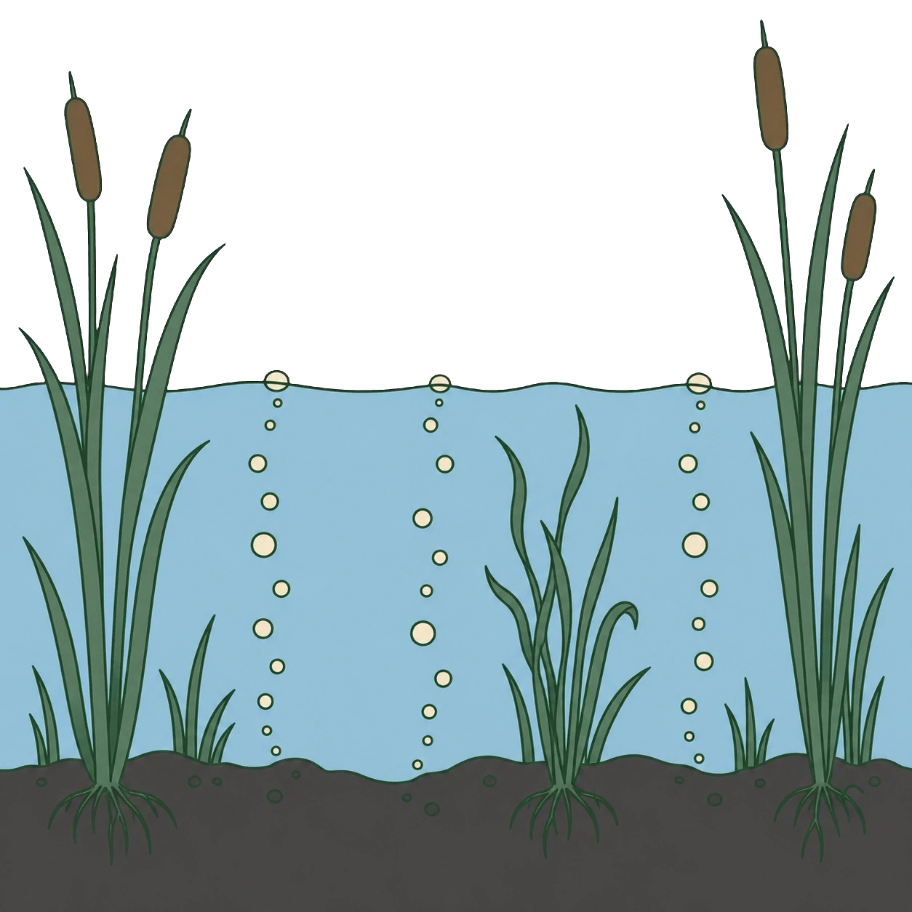
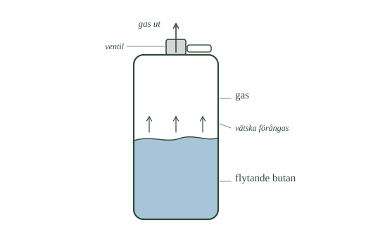
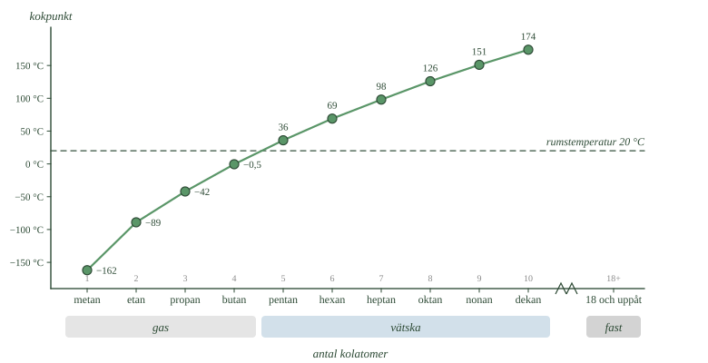

- Varför kan det inte finnas något enklare kolväte än metan?
- Vad är det för särskilt med de miljöer där metan bildas?
- Varifrån kommer kolatomerna i bubblorna som stiger ur ett kärr?
- Varför var gruvgas farligt, och hur varnades gruvarbetarna?
- Vad är skillnaden mellan naturgas och biogas?
De fyra första kolvätena heter metan, etan, propan och butan. Alla fyra är gaser, och de skiljer sig bara med en kolatom i taget. Ändå bildas de på olika sätt, lagras på olika sätt och används till olika saker.
En kolatom och fyra väteatomer
Metan är det enklaste kolväte som finns. Molekylformeln är \(\ce{CH4}\).
En kolatom i mitten, fyra väteatomer runt om. Kolatomen använder alla sina fyra bindningar, och varje väteatom sin enda. Det går inte att göra ett kolväte med färre atomer än så.
Därför står metan först i alkanserien.
Metan bildas där det inte finns syre
När växter och djur dör bryts de ner. Oftast sker det med syre inblandat, och då bildas koldioxid.
Men på vissa ställen finns nästan inget syre. Nere i bottenslammet i ett kärr, i en mosse, i ett översvämmat risfält eller inuti en soptipp. Där bryts det döda materialet ner på ett annat sätt, av andra mikroorganismer, och då bildas metan i stället.
Därför kallas metan ibland för sumpgas.
Om du ser bubblor stiga upp ur ett gyttjigt kärr är det ofta metan. Kolatomerna i den gasen kom en gång från luften — en växt tog upp dem genom fotosyntesen, växten dog, och nu är kolet på väg tillbaka.
- Var i bilden börjar bubblorna? Följ en sträng nedåt.
- Vad finns i bottenslammet som bubblorna kan ha bildats av?
- Varför bildas metan just där nere och inte uppe vid ytan?

Metan i gruvor och hos kor
Metan finns också nere i berggrunden, instängt i lager av kol. När man bryter kol frigörs gasen. Då kallas den gruvgas.
Det har varit farligt. Metan blandat med luft kan explodera, och många gruvolyckor har orsakats av gruvgas. Förr tog gruvarbetare med sig kanariefåglar ner i gruvan, eftersom fåglarna reagerade på dålig luft tidigare än människor gjorde. De använde också särskilda lampor som visade om det fanns farlig gas.
En tredje plats där metan bildas är i magen på kor och får. Där bryts gräs ner av mikroorganismer, precis som i ett kärr, och då bildas metan.
Naturgas och biogas
Metan är huvudinnehållet i två bränslen.
Naturgas kommer ur berggrunden. Den har bildats under miljontals år av organiskt material djupt nere i marken.
Biogas tillverkas i dag, i en rötkammare. Där lägger man matavfall, gödsel eller avloppsslam i en sluten behållare utan syre. Mikroorganismerna gör resten, och gasen samlas upp.
Båda används till uppvärmning, matlagning och som bränsle i bilar och bussar.
Metan som läcker ut i luften utan att brinna påverkar dessutom klimatet kraftigt. Varför det är så tittar vi på i nästa delkapitel.
- Varför kan det inte finnas något enklare kolväte än metan?
- Vad är det för särskilt med de miljöer där metan bildas?
- Varifrån kommer kolatomerna i bubblorna som stiger ur ett kärr?
- Varför var gruvgas farligt, och hur varnades gruvarbetarna?
- Vad är skillnaden mellan naturgas och biogas?
De fyra första alkanerna — metan, etan, propan och butan — är de kolväten man oftast möter först. Alla fyra är gaser vid rumstemperatur, men de används på olika sätt. Skillnaden mellan dem är bara en kolatom i taget, och ändå får det betydelse för hur ämnena bildas, hur de lagras och vad de används till.
Metan har en enda kolatom
Metan är det enklaste av alla kolväten. Molekylformeln är \(\ce{CH4}\): en kolatom och fyra väteatomer. Kolatomen använder alla sina fyra bindningar till väte.
Något enklare kolväte finns inte, och därför står metan först i alkanserien.
Metan bildas där syret tagit slut
Metan bildas när organiskt material bryts ner i miljöer med lite eller inget syre. Döda växtdelar, gödsel och annat organiskt material bryts då ner av mikroorganismer på ett sätt som ger metan. Därför kallas gasen ibland sumpgas.
Sådana syrefria miljöer finns i kärr, mossar, bottenslam, risfält och soptippar. Bubblor som stiger ur ett gyttjigt kärr innehåller ofta metan. Kolatomerna i den metanen kom en gång från luften, genom fotosyntesen.
Metan finns också i berggrunden. I kolflötser kan gasen vara instängd och frigöras vid brytning. Då kallas den gruvgas. Blandningar av metan och luft kan explodera, och gruvgas har historiskt orsakat många olyckor. Gruvarbetare använde kanariefåglar som varning, eftersom fåglarna reagerade tidigt, och särskilda lampor som avslöjade farliga gaser.
En tredje källa är idisslare. I kornas och fårens matsmältning bryts växtmaterial ner av mikroorganismer, och metan bildas.
Metan är huvudbeståndsdelen i naturgas och biogas
Naturgas kommer ur berggrunden och har bildats under mycket lång tid av organiskt material djupt nere i marken. Biogas bildas i stället i rötkammare, där matavfall, gödsel eller avloppsslam bryts ner i syrefri miljö och gasen samlas in.
Båda används till uppvärmning, matlagning och som fordonsbränsle.
Metan som släpps ut utan att förbrännas påverkar dessutom klimatet kraftigt. Varför det är så återkommer vi till i nästa delkapitel.
Biogas och naturgas är samma molekyl men inte samma kol
Standardtexten beskriver naturgas och biogas som två källor till samma ämne. Det är helt riktigt — en metanmolekyl ur en rötkammare går inte att skilja från en ur berggrunden. Samma kolatom, samma fyra väteatomer, samma förbränning.
Ändå räknas de olika, och skälet har ingenting med molekylen att göra.
Kolet i biogas kom ur luften för något år sedan. En växt tog upp koldioxid genom fotosyntesen, växten blev till matavfall eller gödsel, och i rötkammaren blev kolet metan. När gasen brinner går kolet tillbaka till luften. Nettoflödet är noll: lika mycket kol tas upp som avges, och det sker inom ett kretslopp som snurrar på några år.
Kolet i naturgas kom också ur luften — men för hundratals miljoner år sedan. Sedan dess har det legat inlåst i berggrunden, utanför kretsloppet. När naturgas brinner tillförs luften kol som varit borta i geologisk tid. Det finns ingen motsvarande upptagning som balanserar det.
Skillnaden är alltså inte kemisk utan tidsmässig. Den handlar om hur länge kolatomen har varit ur cirkulation.
Det betyder inte att biogas är utan påverkan. Metan som läcker ut oförbränd är ett problem oavsett var kolet kommer ifrån, och rötkammare läcker.
Om modellen. Standardnivån behandlar naturgas och biogas som två sätt att få tag i metan. Kemiskt stämmer det exakt. Men när man frågar vad förbränningen gör med atmosfären räcker inte molekylens formel — man måste veta var kolatomen har varit. Det är en fråga kemin inte kan besvara genom att titta på ämnet.
- Varför eldar vi sällan med etan?
- Vad händer med propan och butan när de utsätts för tryck?
- Varför får det plats så mycket bränsle i en gasoltub?
- Vad händer inne i tändaren när du öppnar ventilen?
- Vilka ämnen bildas när ett kolväte brinner fullständigt?
Etan blir plast, inte värme
Nästa kolväte efter metan är etan, \(\ce{C2H6}\). Det finns ofta tillsammans med metan i naturgas.
Men etan används sällan som bränsle. I stället är det en råvara. I industrin byggs etan om till andra ämnen — framför allt till eten, som i sin tur blir plast.
Etan är alltså viktigt inte för att vi eldar med det, utan för att det är en startpunkt för annan tillverkning.
Propan och butan går att pressa till vätska
Sedan kommer propan, \(\ce{C3H8}\), och butan, \(\ce{C4H10}\).
Båda är gaser när de ligger fritt i luften. Men de har en egenskap som gör dem användbara: om man pressar ihop dem blir de vätska. Det krävs inget extremt tryck — måttligt räcker.
Det är hela idén med gasol. Gasol är propan, butan eller en blandning av båda.
Därför får det plats så mycket i en gasoltub
En gas tar mycket större plats än samma mängd vätska. Genom att pressa gasolen till vätska får man därför in mycket bränsle i en liten behållare.
Det är därför en gasoltub går att bära, och därför ett campingkök fungerar.
Samma sak händer i en cigarettändare. Är den genomskinlig kan du se vätskan ligga i botten, med gas ovanför. När du trycker på knappen öppnas en ventil och gas strömmar ut. Då förångas lite av vätskan och ersätter gasen som försvann.
- Var går gränsen mellan vätska och gas?
- Vad händer med vätskeytan när gas strömmar ut upptill?
- Varför får det plats mer bränsle i tuben när innehållet är vätska än när det är gas?

Alla brinner
Etan, propan och butan brinner allihop. När de reagerar med syrgas bildas koldioxid och vatten, och energi frigörs.
Förbränningen av metan ser ut så här:
Det gäller inte bara de fyra första alkanerna utan alla kolväten. Alla ger koldioxid och vatten när de brinner fullständigt.
Här räcker det med huvudidén: kolväten ger energi när de brinner. Vad som händer i lågan, och varför olika bränslen passar till olika saker, tittar vi på i nästa delkapitel.
- Varför eldar vi sällan med etan?
- Vad händer med propan och butan när de utsätts för tryck?
- Varför får det plats så mycket bränsle i en gasoltub?
- Vad händer inne i tändaren när du öppnar ventilen?
- Vilka ämnen bildas när ett kolväte brinner fullständigt?
Etan finns i naturgas och används i industrin
Det näst enklaste kolvätet är etan, \(\ce{C2H6}\). Det finns ofta tillsammans med metan i naturgas.
Etan används sällan som bränsle i vardagen. I stället är det en viktig råvara i industrin, där ämnet byggs om till andra kolföreningar — bland annat eten, som används vid tillverkning av plast.
Etan är alltså viktigt inte för att vi eldar med det, utan för att det är en utgångspunkt för annan kemisk industri.
Propan och butan blir gasol
Efter etan kommer propan, \(\ce{C3H8}\), och butan, \(\ce{C4H10}\). Båda är gaser vid vanligt tryck, men de har en egenskap som gör dem användbara: de övergår till vätska under måttligt tryck.
Det är hela idén med gasol, som består av propan, butan eller en blandning. I en gasolbehållare är mycket av innehållet flytande, och därför ryms mycket bränsle i liten volym. Det gör tuberna praktiska att bära och transportera.
Gasol används i grillar, campingkök, gasolvärmare och gasolsvetsar. I en genomskinlig cigarettändare syns butanen som vätska längst ner och gas ovanför. När ventilen öppnas strömmar gas ut, och ny vätska förångas för att ersätta den.
Alla tre brinner och ger energi
Etan, propan och butan är brännbara. Vid fullständig förbränning med syrgas bildas koldioxid och vatten, och energi frigörs.
Förbränningen av metan kan skrivas:
Detta gäller inte bara de fyra första alkanerna utan alla kolväten. Här räcker huvudidén: kolväten ger energi när de förbränns. Vad som händer vid förbränningen, och varför olika kolväten passar till olika bränslen, undersöker vi i nästa delkapitel.
Därför går metan inte att pressa till vätska
Standardtexten säger att propan och butan blir vätska under måttligt tryck. Det stämmer. Men det inbjuder till slutsatsen att alla gaser blir vätska om man bara pressar hårt nog, och den är fel.
Metan blir aldrig vätska vid rumstemperatur, hur högt trycket än är.
Förklaringen är att varje ämne har en kritisk temperatur. Över den kan molekylerna röra sig så snabbt att ingen attraktion i världen håller dem samlade i en vätska. Tryck pressar ihop dem, men de far isär igen.
Under den kritiska temperaturen räcker det däremot med tryck.
| Ämne | Kritisk temperatur |
|---|---|
| Metan | −82 °C |
| Etan | 32 °C |
| Propan | 97 °C |
| Butan | 152 °C |
Rumstemperatur ligger kring 20 °C. Propan och butan har kritiska temperaturer långt över den, och går därför att pressa till vätska i en tub. Metan ligger hundra grader under, och kan det inte.
Därför måste metan i stället kylas för att bli vätska. Det görs, till −162 °C, och kallas då flytande naturgas. Fartygen som transporterar den är i praktiken enorma termosar.
Etan ligger precis på gränsen. En varm sommardag kan etan inte pressas till vätska; en sval vårdag kan det.
Om modellen. Att propan och butan blir vätska under tryck är inte en egenskap hos gaser i allmänhet, utan hos just dessa ämnen vid just den här temperaturen. Varje gång ett ämne beter sig på ett visst sätt "under tryck" är det värt att fråga vid vilken temperatur.
- Hur ändras kokpunkten när kolkedjan blir längre?
- Ungefär hur många kolatomer har de kolväten som är gaser vid rumstemperatur?
- Varför är kolvätena i bensin vätskor medan de i naturgas är gaser?
- Vad betyder det att ett ämne kokar?
- Varför krävs det mer energi för att koka en lång molekyl än en kort?
Ju längre kedja, desto högre kokpunkt
Ställ upp de första alkanerna bredvid varandra och titta på deras kokpunkter. Det syns ett tydligt mönster: kokpunkten stiger hela tiden när kedjan blir längre.
Metan kokar vid ungefär −162 °C. Det är väldigt kallt — metan måste kylas kraftigt för att bli vätska.
Butan kokar vid ungefär −0,5 °C, alltså strax under noll. Det är nästan rumstemperatur.
Pentan, som bara har en kolatom till, kokar vid +36 °C. Pentan är alltså redan en vätska när du håller den i handen.
Mönstret är lika regelbundet som mönstret i formlerna. När kedjan växer ändras både formeln och ämnets egenskaper.
- Mellan vilka två ämnen korsar kurvan den streckade linjen?
- Hur mycket stiger kokpunkten från metan till etan, jämfört med från nonan till dekan?
- Varför har alkaner med arton kolatomer ingen punkt i kurvan?

Korta kedjor är gaser, långa är fasta
Vid rumstemperatur gäller en tumregel:
- 1–4 kolatomer: gas
- 5–17 kolatomer: vätska
- 18 kolatomer eller fler: fast ämne
Det är därför metan, etan, propan och butan är gaser. De har fyra kolatomer eller färre.
Kolvätena i bensin och fotogen har fler kolatomer, och därför är de vätskor. Ännu längre kolväten är fasta — de finns i paraffin, som stearinljus görs av, och i asfalt.
Nu blir det begripligt varför olika bränslen ser så olika ut. De består alla av kolväten. Det som skiljer dem åt är hur långa kedjorna är.
Längre molekyler håller fast vid varandra
Varför är det så här?
Att koka ett ämne betyder att molekylerna får så mycket energi att de lämnar vätskan och far iväg som gas.
Molekyler dras till varandra. Ju större en molekyl är, desto bättre fastnar den vid sina grannar — det finns helt enkelt mer molekyl som kan ligga an mot omgivningen.
En liten molekyl som metan hålls fast dåligt och slipper lätt loss. Det räcker med mycket lite energi, alltså mycket låg temperatur.
En lång molekyl hålls fast av många grannar längs hela sin längd. Den behöver mycket mer energi för att komma loss, alltså mycket högre temperatur.
Därför har långa kolväten hög kokpunkt och korta har låg.
- Hur ändras kokpunkten när kolkedjan blir längre?
- Ungefär hur många kolatomer har de kolväten som är gaser vid rumstemperatur?
- Varför är kolvätena i bensin vätskor medan de i naturgas är gaser?
- Vad betyder det att ett ämne kokar?
- Varför krävs det mer energi för att koka en lång molekyl än en kort?
Kokpunkten stiger med kedjans längd
Jämför man de första alkanerna syns ett tydligt mönster: kokpunkten stiger när kolkedjan blir längre.
Metan kokar vid ungefär −162 °C. Butan kokar vid ungefär −0,5 °C, alltså nära rumstemperatur. Pentan, med bara en kolatom till, är redan en vätska när du håller den i handen.
Mönstret är lika regelbundet som mönstret i molekylformlerna. När kedjan växer ändras inte bara formeln utan också ämnets egenskaper.
Därför är korta kolväten gaser och långa fasta
Vid rumstemperatur gäller en tumregel: alkaner med ungefär en till fyra kolatomer är gaser, fem till sjutton är vätskor, och arton eller fler är fasta ämnen.
Det är därför metan, etan, propan och butan är gaser, medan kolvätena i bensin och fotogen är vätskor. Ännu längre kolväten bildar fasta ämnen som paraffin och ingår i asfalt.
Kedjelängden förklarar alltså varför olika bränslen ser så olika ut. De består alla av kolväten, men av kolväten med olika långa kedjor.
Längre molekyler hänger ihop bättre
Att koka ett ämne betyder att molekylerna får så mycket energi att de lämnar vätskan och blir gas.
Större molekyler dras till varandra starkare än mindre. Ju längre en kolvätemolekyl är, desto bättre fastnar den vid sina grannar, och desto mer energi krävs för att slita loss den.
Därför har längre kolväten högre kokpunkt. De små molekylerna lossnar lätt och blir gaser, medan de större hålls kvar och blir vätskor eller fasta ämnen.
Vilken sorts attraktion det handlar om återkommer vi till.
Attraktionen kommer av att elektronerna rör sig
Standardtexten säger att molekyler dras till varandra och att större molekyler dras starkare, men lämnar öppet vad attraktionen egentligen är. Här är svaret.
En kolvätemolekyl har ingen laddning. Den är varken positiv eller negativ, och elektronerna är i genomsnitt jämnt fördelade över molekylen.
Men i genomsnitt är inte detsamma som hela tiden. Elektronerna rör sig ständigt, och i varje enskilt ögonblick kan de råka ligga något tätare i ena änden av molekylen än i den andra. Just då är den änden en aning negativ och den motsatta en aning positiv.
Det ögonblicket varar oerhört kort. Men det räcker för att påverka grannmolekylen: dess elektroner skjuts undan, och även den blir tillfälligt ojämn. De två ojämnheterna dras till varandra.
Sedan ändras allt igen — och igen, miljarder gånger i sekunden. Nettoresultatet är en svag men ständig attraktion mellan molekylerna. Den kallas van der Waals-krafter.
Varje enskild sådan kontakt är mycket svag. Men en lång molekyl har många kontaktpunkter mot sina grannar samtidigt, och summan blir stor. Det är därför kokpunkten stiger så regelbundet med kedjelängden: varje ny \(\ce{CH2}\)-grupp lägger till ungefär lika mycket kontaktyta, och därmed ungefär lika mycket attraktion.
Det förklarar också något avsnitt 3 kommer till. En grenad molekyl är mer hoptryckt och har mindre yta att ligga an med. Den hålls därför sämre fast, och kokar vid lägre temperatur än en rak molekyl med lika många atomer.
Om modellen. "Molekylerna dras till varandra" är sant men säger inte varför. Svaret är att attraktionen inte kommer av någon laddning hos molekylen, utan av att elektronerna aldrig står stilla. Det är den svagaste kraften i kemin — och den avgör ändå om ett kolväte är gas, vätska eller asfalt.
Laddar övningskort…
Laddar frågor ...